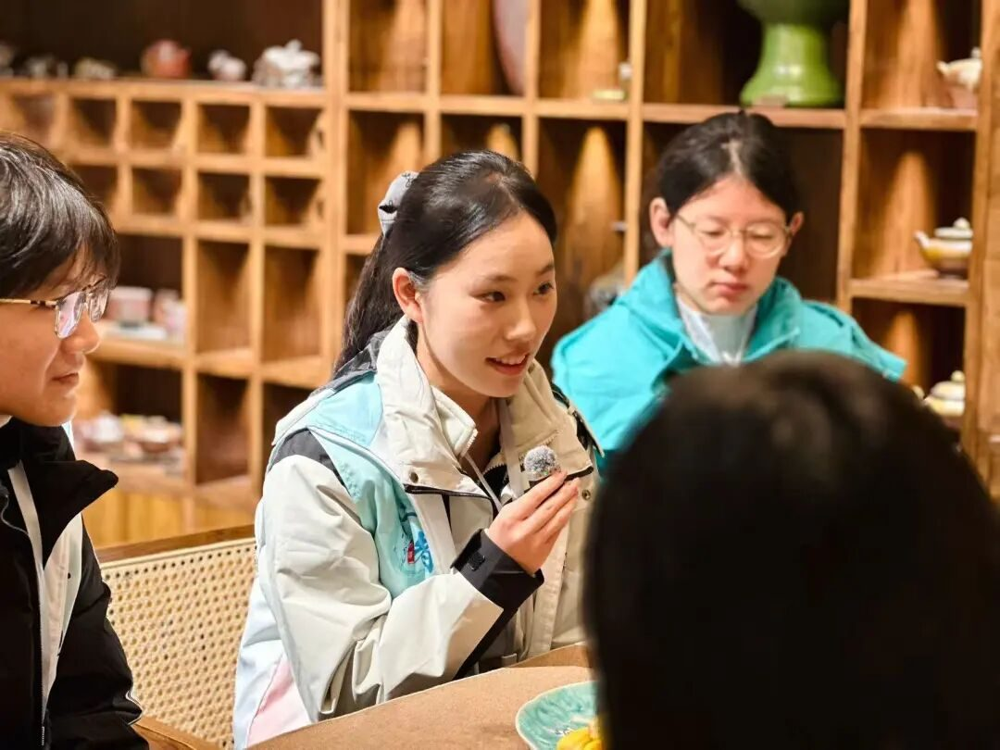
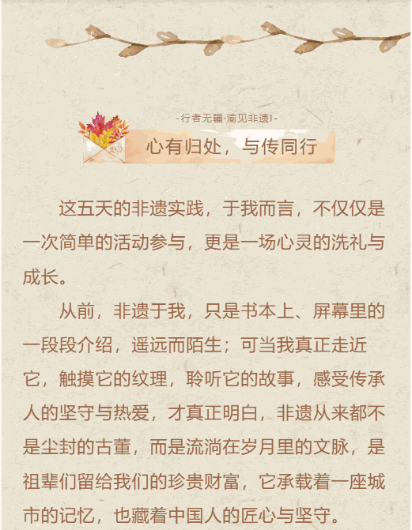
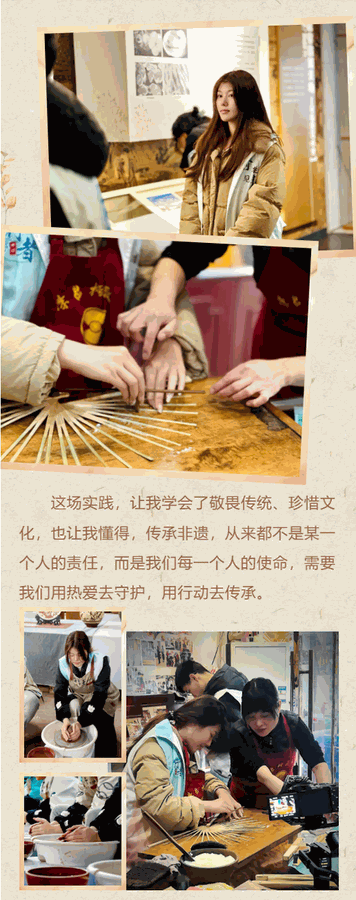
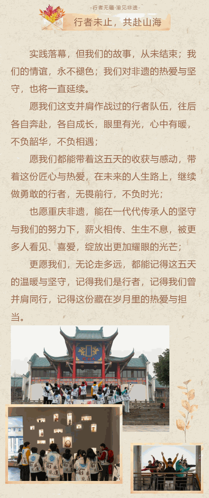

【行者无疆·渝见非遗】个人实践感悟——刘辰锡

行者无疆
每一段并肩同行的时光，
都藏着不期而遇的成长；
每一次全力以赴的奔赴，
都镌刻着刻骨铭心的印记。
当最后一次社会实践的序幕缓缓拉开，我握着“队长”这两个字，心中既有对过往的眷恋，更有对前路的忐忑——这不仅是一段实践旅程的收官，更是一场关于责任、陪伴与传承的修行，而我从未想过，这场修行里，最珍贵的馈赠，从来都是身边并肩的你们，和一路滚烫的热爱。




行者无疆
来源 | 行者无疆实践团
文字 | 刘辰锡
图片 | 行者无疆实践团
编辑 | 刘辰锡
审核 | 刘辰锡
责编 | 邹靓靓 周 亮